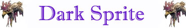

Pugnale 1d3+1 (punta)
Pugnale 1d3+1 (punta),+5 (neg.)
Confusione Minore;
Confusione Minore;
Lama Tenebrosa;
Effigi d'Ombra;
Effigi d'Ombra;
Forest Walking;
Evasione Superiore;
Forest Walking;
Evasione Superiore;

|
|
TIPOLOGIA | DARK SPRITE | SOVRANO DEI ROVI |
| Ambiente/Habitat | Foreste | Foreste | |
| Frequenza | Rara | Rara | |
| Organizzazione | Gruppo | Solitario | |
| Periodo di Attività | Qualsiasi | Qualsiasi | |
| Dieta | Onnivora | Onnivora | |
| Intelligenza | Very intelligent (11) | Highly intelligent (13) | |
| Punti Combattimento | 12 Punti Combattimento | 24 Punti Combattimento | |
| Tesoro | Comune | Vedi Sotto | |
| Allineamento Dominante | Neutrale Malvagio | Neutrale Malvagio | |
| Numero di Apparizione | 1d3+2 | 1 | |
| Classe Armatura | 3 [10 base, 3 corazza, 4 destrezza] | 1 [10 base, 5 corazza, 4 destrezza] | |
| Movimento | 8 esagoni | 8 esagoni | |
| Dadi Vita | 3 (+2 punti ferita) | 9 (+6 punti ferita) | |
| Thac0 | 18 melee / 16 arco | 12 melee / 10 arco | |
| Numero di Attacchi | Arma | Arma | |
| Danni |
Arco: 1d3+1 (punta) Pugnale 1d3+1 (punta) |
Arco: 1d3+1 (punta) Pugnale 1d3+1 (punta),+5 (neg.) |
|
| Poteri Offensivi | Arco del
Folletto Oscuro; Confusione Minore; |
Arco del
Folletto Oscuro; Confusione Minore; Lama Tenebrosa; |
|
| Poteri Difensivi | Robustezza Superiore
(+2 pf); Effigi d'Ombra; |
Robustezza Superiore
(+6 pf); Effigi d'Ombra; |
|
| Poteri Generici |
Trasformazione in Cespuglio; Forest Walking; Evasione Superiore; |
Trasformazione in Cespuglio; Forest Walking; Evasione Superiore; |
|
| Vulnerabilità | Nessuna | Nessuna | |
| Resistenza alla Magia | Nessuna | Nessuna | |
| Sensi | Infravisione (18 metri) | Infravisione (18 metri) | |
| Dimensioni | Small (80 cm. alto) | Small (80 cm. alto) | |
| Morale | Steady (12) | Champion (16) | |
| Valore in Punti Esperienza | 502 | 4029 |
|
TIRI SALVEZZA DELLA CREATURA - DARK SPRITE |
|||||||
| CORAGGIO | ENERGIA VITALE | MAGIA | MALATTIA | MENTE | RIFLESSI | ROBUSTEZZA | VELENO |
| 0 | 0 | +10% | 0 | 0 | +5% | 0 | +5% |
| 49 | 56 | 52 | 47 | 60 | 44 | 58 | 46 |
|
TIRI SALVEZZA DELLA CREATURA - SOVRANO DEI ROVI |
|||||||
| CORAGGIO | ENERGIA VITALE | MAGIA | MALATTIA | MENTE | RIFLESSI | ROBUSTEZZA | VELENO |
| 0 | 0 | +10% | 0 | 0 | +5% | 0 | +5% |
| 39 | 46 | 44 | 37 | 52 | 34 | 48 | 36 |
Descrizione
Il Dark Sprite è un folletto malvagio delle foreste. Si tratta di una creatura boriosa, altezzosa e molesta che infesta le foreste più profonde. La sua pelle è abbastanza scura e le sue dimensioni sono ridotte non raggiungendo il metro di altezza. Conosciuto per la sua crudeltà ed il suo sdegno nei confronti delle altre creature umanoidi il Dark Sprite è pur sempre una creatura delle foreste. Nonostante il temperamento malvagio, infatti, queste creature amano la foresta e la curano difendendo, spesso con eccessiva violenza, la flora e la fauna selvatica. In molti casi, la mera presenza di creature umanoidi nella foresta è un motivo sufficiente a scatenare la loro ira. La stessa presenza degli elfi, se da un certo punto di vista è tollerata, non è accettata serenamente.
Combat
Nonostante le sue piccole dimensioni il Dark Sprite combatte tenacemente sia in corpo a corpo che utilizzando piccoli archi creati con rami e rovi. Quanto al combattimento in corpo a corpo il Dark Sprite combatte utilizzando un'arma piccola, solitamente un pugnale del tipo Khanjar (iniziativa +2, danni 1d3+1 da punta). Il Dark Sprite, però, preferisce evitare di combattere in corpo a corpo ma utilizzare il combattimento con l'arco anche al fine di utilizzare il proprio potere speciale.
ARCO DEL
FOLLETTO OSCURO [ARCO]
(Powerful Special
Ability):
La modalità
favorita di combattere del Dark Sprite è l'utilizzo del suo piccolo arco di
rovi. Data la sua destrezza costui riceve un
bonus di +2 al tiro per colpire
quando utilizza tale arma. Inoltre costui può utilizzare tale arma come se
possedessero l'Arte di
Combattimento del Lancio e del Tiro.
L'arco del Dark Sprite non può mai mantenersi incoccato ed ha un fattore
iniziativa pari a +4. L'arco ha una
cadenza di fuoco (rate of fire) di due
frecce al round ed ogni freccia che
colpisce provoca
1d3+1 danni da punta.
La gittata di questo arco è pari a
21 metri / 33 metri (-2 alla Tach0)
/ 45 metri (-5 alla Tach0) per ogni
restante caratteristica tale arco può assimilarsi ad un arco corto. Ogni Dark
Sprite trasporta mediamente 12 frecce delle quali 1d3 sono avvelenate con un
veleno prodotto da queste stesse creature.
Onset
1d3 rounds,
Effetti
1 su 1d10 ogni round di non poter effettuare alcuna azione (si tiri prima della
dichiarazione di iniziativa) restando stordito sul posto (stunned) per 1 turno/1-2-3
su 1d10 ogni round di non poter effettuare alcuna azione (si tiri prima della
dichiarazione di iniziativa) restando stordito sul posto (stunned) per 1 turno,
Delay
none,
Tiro Salvezza
-1,
Assuefazione
1 day.
LAMA TENEBROSA [PUGNALE] [SOVRANO DEI ROVI] (Powerful Special Ability): Il Sovrano dei Rovi imprime il suo spirito malvagio sull'arma che utilizza. La stessa, quindi, viene circondata da un'aura di energia negativa. Chi viene colpito in corpo a corpo dal Sorvano dei Rovi perde, quindi, 5 punti ferita supplementari per la lesione alla propria energia positiva (si consideri danno da irradiamento di energia negativa). Inoltre, se il Sovrano dei Rovi colpisce il proprio avversario effettuando un tiro naturale pari a 18-20 lo stesso subirà una lesione all'energia vitale come se fosse stato vittima di un risucchio di energia. Questo potere non può essere contrastato da una magia di dispel magic.
CONFUSIONE
MINORE
(Superior Special
Ability):
La natura magica della creature
permette alla stessa di utilizzare il presente potere speciale
il cui utilizzo è
del tutto e per tutto
assimilabile al lancio di un incantesimo
avente componenti verbali e somatici e
casting time pari a +3.
La creatura può utilizzare
questo potere su un qualsiasi avversario si trovi
entro 15 metri di
distanza dalla stessa. La vittima, quindi, potrà provare a
superare
un tiro salvezza su mente.
Se il tiro salvezza fallisce, la vittima sarà confusa magicamente a partire dal
round successivo. Quindi, all'inizio di ogni round (durante la fase delle
intenzioni) si tiri 1d6 e si consulti la seguente tabella per determinare
l'azione che la stessa compirà:
1-2) La vittima potrà agire normalmente.
3-4) La vittima attaccherà la creatura a costei più vicina (se vi sono creature
equidistanti, verificare a sorte quella attaccata).
5-6) La vittima resterà ferma sul posto senza compiere alcuna azione (non subirà
però penalità alla propria classe armatura).
Si noti che qualora si verifichi il risultato di attacco alla creatura più
vicina (3-4) la vittima effettuerà i suoi attacchi comuni più lesivi (scegliendo
ad es. l'arma che possa provocare più danni) senza però effettuare attacchi o
poteri speciali, senza lanciare incantesimi e senza utilizzare punti
combattimento. Sono immuni agli effetti di questo potere tutte le creature
immuni ai comuni incantesimi mentali (si pensi ai costruiti, ai non morti ed
alle creature con valore di intelligenza pari a Non (0).
L'effetto della confusione permarrà per 5 round ma può essere dissolto come un
incantesimo lanciato al 5° livello di lancio.
Una volta utilizzata questa abilità speciale
la creatura non può utilizzarla
nuovamente nei nove round di combattimento immediatamente successivi.
EFFIGI D'OMBRA (Powerful Special Ability): La creatura conosce un rituale magico attraverso il quale è in grado di richiamare immagini d'ombra di sé stessa per confondere i nemici con i quali combatte. L'utilizzo del potere è del tutto e per tutto assimilabile al lancio di un incantesimo avente componenti verbali e somatici e casting time pari a +3. Orbene all'esito dell'utilizzo del potere appariranno al fianco della creatura tre effigi d'ombra totalmente simili alla stessa. Le effigi si muoveranno intorno alla creatura seguendola e confondendo i suoi avversari che non saranno in grado di distinguere tra quest'ultima e le false immagini d'ombra. Qualsiasi creatura attacchi e colpisca la creatura con attacchi, incantesimi o poteri speciali a bersaglio singolo, avrà le medesime probabilità di aver colpito costui od una delle sue effigi. Se un'effige viene colpita la stessa scomparirà definitivamente. Se la creatura è coinvolta da un attacco ad area capace di produrgli danno tutte le effigi svaniranno simultaneamente (non, però, nel caso in cui applicando la resistenza magica la stessa risulti resistere all'effetto). Qualora non siano precedentemente distrutte, le effigi permarranno intorno alla creatura per 5 round. Le effigi potranno essere considerate a tutti gli effetti come illusioni dovendosi utilizzare tutte le regole applicabili per le stesse. Una volta utilizzato questo potere la creatura non potrà riutilizzarlo nei nove round di combattimento successivi.
ROBUSTEZZA SUPERIORE (Typical Ability): Il fisico della creatura è estremamente robusto conferendo alla stessa una robustezza superiore che gli garantisce 2 punti ferita supplementari [SOVRANO DEI ROVI 6 punti ferita supplementari].
TRASFORMAZIONE IN CESPUGLIO (Superior Special Ability): Restando fermo per un intero turno il Dark Sprite può trasformarsi in un piccolo cespuglio (si tratta di una vera trasformazione e non di un'illusione) dall'aspetto dallo stesso prescelto (solitamente simile alla vegetazione circostante). In forma di cespuglio il Dark Sprite non può muoversi né compiere altre azioni ma è pienamente consapevole di ciò che gli accade intorno. Quando desidera il Dark Sprite può riprendere la sua forma fisica in luogo di un'azione di mezzo movimento e quindi effettuare nel medesimo round, restando sul posto, un'azione oppure attaccare oppure muoversi del resto del suo movimento. Quando compare in questo modo il Dark Sprite impone ai propri avversari una prova di sorpresa con una penalità di -2.
FOREST WALKING (Lesser Special Ability): La creatura può muoversi nelle foreste riducendo un livello di impedimento dovuto all'attraversamento di quel tipo di terreno (ad esempio, può muoversi in una foresta leggera considerata di primo livello di impedimento ad un normale fattore movimento).
EVASIONE SUPERIORE (Superior Special Ability): Questa creatura è in grado di spostarsi così agilmente da poter evadere gli attacchi alle spalle dei propri nemici. In particolare, questa creatura potrà utilizzare la competenza Evasive Fighting disponendo di una prova complessiva pari a 17.
Habitat/Society
Il Dark Sprite vive in piccole comunità localizzate spesso in luoghi difficilmente accessibili all'interno di foreste selvagge. Costoro sono creature delle foreste che adorano l'aspetto violento e selvaggio della natura. Queste creature odiano le intrusioni nel loro territorio e le respingono con l'uso della forza. Possono tollerare solo gli elfi anche se spesso litigano e combattono anche con questi. Una comunità conta comunemente 6d3+2 Dark Sprite. Nel 33% dei casi i Dark Sprite allevano Api Giganti (INSECT GIANT, BEE WORKER ) nella loro comunità che usano come guardie e per la produzione del loro prezioso miele. Qualora allevate saranno tenute in cattività 1d6+2 api in apposite celle posizionate nella comunità dei Dark Sprite. In ogni caso saranno assenti sia le Api Guerriere che la loro regina. Ogni gruppo di Dark Sprite che è incontrato ha, quindi, il 33% di essere accompagnato da un'Ape Gigante.
Ogni comunità di Dark Sprite è guidata da un Sovrano dei Rovi. Il Sovrano dei Rovi è il vertice della comunità ed è in grado di creare, utilizzando un antico rituale, nuovi folletti malvagi. Il Sovrano prende tutte le decisioni più rilevanti ed è sempre scortato da due Dark Sprite.
Ecology
Le origini dei Dark Sprite si sono perse nel tempo... Alcune antiche storie narrano di un malvagio popolo di folletti creato dalla dea Kalian, sorella malvagia di Arlinir, prima della Guerra degli Dei. In base a tali racconti, questa divinità si punse accidentalmente su un cespuglio di rovi e la goccia del suo sangue divino cadendo trasformò il cespuglio in un folletto. Si narra, quindi, che in questo modo fu creato la prima Sovrana dei Rovi. Si dice che costei, chiamata Zalamèsh, divenne fedele servitrice di Kalian rappresentando gli occhi della dea nelle foreste dopo il suo esilio nel sottosuolo. La legenda vuole che Zalamèsh, per i suoi servigi e per la devozione di tutti i suoi figli, divenne una semi-divinità della malvagia dea. Per quanto si sa, i Dark Sprite non si riproducono ma sono creati dal loro Sovrano dei Rovi attraverso un antico rituale. I Sovrani dei Rovi sono creati direttamente da Zalamésh attraverso l'uso del potere divino di cui dispone. L'albero o l'arbusto dal quale è creato il Sovrano dei Rovi prende il nome di Pianta Madre. Il Sovrano dei Rovi, quindi, coltivando la pianta madre può effettuare il rituale dal quale germoglieranno i suoi folletti oscuri. Ogni Sovrano dei Rovi può coltivare una sola Pianta Madre che, a sua volta, può generare e tenere in vita contemporaneamente un numero massimo di Dark Sprite pari a 6d3+2 (Sovrano dei Rovi escluso). Il rituale prevede 24 ore di cura della Pianta Madre e di preghiere a Zalamèsh da parte del Sovrano dei Rovi al termine delle quali nascerà, per gemmazione, un singolo Dark Sprite. La Pianta Madre, quindi, deve riposare per due interi giorni prima che un nuovo rituale di gemmazione possa essere effettuato utilmente dal Sovrano dei Rovi. Se la Pianta Madre, per qualsiasi motivo, muore i folletti creati ed il loro Sovrano dei Rovi continueranno a vivere ma quest'ultimo non potrà più ripopolare la propria comunità in caso di morte dei suoi sudditi. Per tale motivo il Sovrano dei Rovi custodisce la Pianta Madre come se si trattasse del suo più importante tesoro. Si noti, infatti, che ogni Sovrano dei Rovi può utilizzare solo la Pianta Madre dalla quale è stato creato per effettuare il rituale. Morto il Sovrano dei Rovi, la Pianta Madre resterà una comune pianta pur mantenendo l'aspetto particolarmente rigoglioso che la contraddistingue.
[DARK SPRITE] Mystical Resource Sourge (Cuore) Quantità: 2, Presenza 25% - Scuola di Magia (si determini casualmente dopo l'estrazione tra le seguenti): Enchantment, Charm, Alteration, Illusion - Qualità della Risorsa: Common.
[SOVRANO DEI ROVI] Mystical Resource Sourge (Cuore) Quantità: 1, Presenza 50% - Scuola di Magia (si determini casualmente dopo l'estrazione tra le seguenti): Enchantment, Charm, Alteration, Illusion - Qualità della Risorsa: Uncommon.